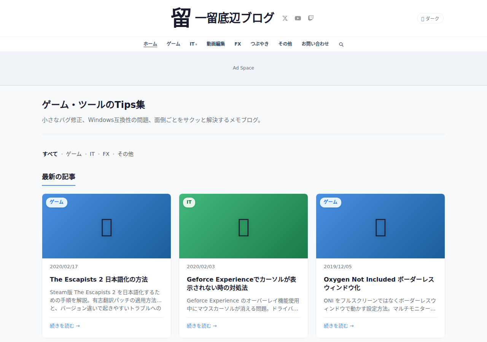
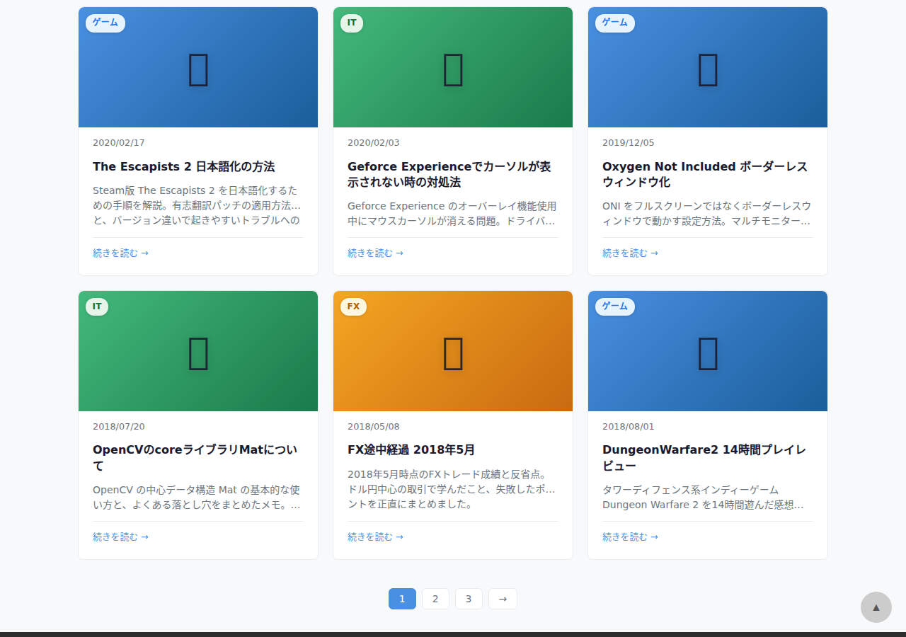

Steam で購入した The Escapists 2 は残念ながら公式の日本語対応がありません。 しかし有志による日本語化パッチが公開されており、これを適用することで日本語でプレイすることができます。 この記事では、パッチの入手から適用までの手順を解説します。
必要なもの
- Steam 版 The Escapists 2（バージョン確認推奨）
- 有志翻訳パッチ（後述のリンクから入手）
- 7-Zip などのアーカイブ解凍ソフト
手順1: ゲームのバージョンを確認する
まず Steam ライブラリから The Escapists 2 を右クリックし、 「プロパティ」→「ローカルファイル」タブを開きます。 「ローカルファイルを閲覧」ボタンをクリックするとインストールフォルダが開きます。

フォルダ内の TheEscapists2.exe を右クリック →「プロパティ」→「詳細」タブでファイルバージョンを確認してください。
翻訳パッチはバージョン対応が分かれていることがあるため、この確認が重要です。
手順2: 翻訳パッチを入手する
有志翻訳プロジェクトのページ（GitHub や掲示板で公開されていることが多い）から
最新の翻訳パッチをダウンロードします。通常は .zip 形式で配布されています。
ダウンロードしたファイルは必ずウイルススキャンをかけてから使用してください。 信頼できるソースからのみダウンロードすることを強く推奨します。
手順3: パッチを適用する
ダウンロードした zip ファイルを解凍すると、以下のようなファイルが含まれています：
TheEscapists2_JP/
├── Content/
│ └── Language/
│ └── ja_JP.dat
└── README.txt
Content/Language/ フォルダ内の ja_JP.dat を、
ゲームのインストールフォルダ内の同じパスにコピーします。
既存のファイルがある場合はバックアップを取ってから上書きしてください。

手順4: 言語設定を変更する
ゲームを起動し、タイトル画面の Settings（設定） から Language を Japanese に変更します。 一度ゲームを再起動すると日本語が反映されます。
日本語化後に起こりやすいトラブルと対処法
文字化けが発生する場合
フォントファイルが正しく配置されていない可能性があります。
パッチ内に Font/ フォルダが含まれている場合は、
そちらも同様にコピーしてください。
一部テキストが英語のまま
翻訳が未完成の部分や、DLC コンテンツは英語のままになることがあります。 翻訳プロジェクトの更新を定期的にチェックしてみましょう。
ゲームがクラッシュする
ゲームのバージョンと翻訳パッチのバージョンが一致していない可能性があります。 Steam の「プロパティ」→「アップデート」から自動更新の設定を確認し、 ゲームバージョンに対応したパッチを使用してください。
まとめ
The Escapists 2 の日本語化は決して難しくありませんが、バージョン管理が鍵です。 ゲームが更新されるたびにパッチとの互換性を確認するようにしましょう。 有志の翻訳者さんたちに感謝しつつ、日本語でたっぷり楽しんでください！